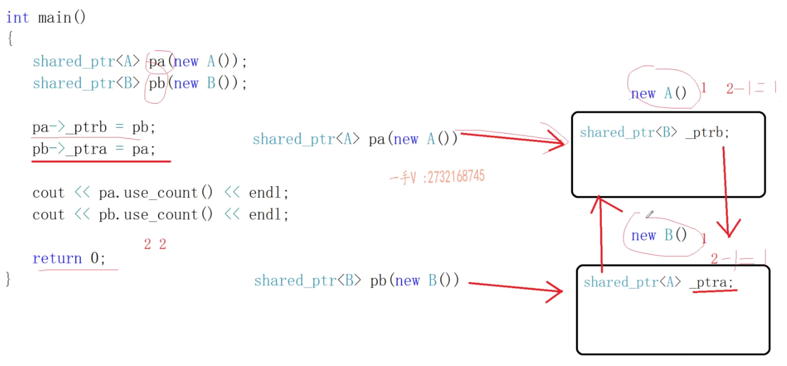

xusing namespace std;
// 智能指针 保证能做到资源的自动释放// 智能指针实际利用栈上的对象出作用域自动析构的特征，来做到资源的自动释放// 因为裸指针是个堆，所以需要手动释放对象，现在写成类后，就可以用栈来自动释放对象了template<typename T>class CSmartPtr{public: CSmartPtr(T *ptr = nullptr) :mptr(ptr) {} ~CSmartPtr() { delete mptr; }
T& operator*() { return *mptr; } //必须是T&，否则不能修改mptr指向的对象的值，反而是会创建一个临时副本，把值传给临时副本，而不是原对象 T* operator->() { return mptr; }private: T *mptr;};
int main(){ CSmartPtr<int> ptrl(new int); *ptrl = 20;// 这一行使用了重载的解引用运算符来访问 ptrl 所管理的 int 对象，并将其值设置为 20。
class Test { public: void test() { cout << "call Test::test" << endl; } }; CSmartPtr<Test> ptr2(new Test()); // (ptr2->operator->())->test(); ptr2->test(); return 0;}
// 智能指针放在堆上// CSmartPtr<int> *p = new CSmartPtr<int>(new int); delete p;这时候p是指向堆的智能指针，所以也要手动释放，这样就没啥意义了，还不如直接使用裸指针// 在这段代码中，p 是一个指向 CSmartPtr<int> 类型的指针。*p 是一个 CSmartPtr<int> 类型的对象。// 在这里，new int 是一个表达式，它使用 new 运算符动态分配内存来存储一个 int 类型的对象，并返回一个指向该对象的指针。这个指针被传递给 CSmartPtr<int> 的构造函数作为参数
我们继续看下面的代码
xxxxxxxxxxCSmartPtr<int> p1(new int);CSmartPtr<int> p2(p1);这样的话，是会报错的，因为这会造成一个浅拷贝的问题（等以后再详细解释
那么为了解决浅拷贝的问题，我们用不带引用计数的智能指针和带引用计数的智能指针来解决
不带引用计数的：是只能一个指针管理资源
auto_ptr:C++库里面的
C++11新标准：scoped_ptr和unique_ptr
首先说auto_ptr
xxxxxxxxxxauto_ptr<int> p1(new int);auto_ptr<int> p2(p1);这样是可以正确运行的
但我们继续
xxxxxxxxxxauto_ptr<int> p1(new int);auto_ptr<int> p2(p1);*p2 = 20;cout << *p1 << endl;这是会报错的，那为什么呢，p1和p2不都是指向同一块内存吗
这时候咱们可以看下auto_ptr的拷贝构造函数看看了
xxxxxxxxxxauto_ptr(auto_ptr& _Right) noexcept : _Myptr(_Right.release()) {}xxxxxxxxxx_Ty* release() noexcept { _Ty* _Tmp = _Myptr; _Myptr = nullptr; return _Tmp; }_Right就是咱们传入的p1了，p1调用release后，返回值初始化p2，在源代码里其实就是_Myptr，_Myptr查看源码，它是成员变量，也就是auto_ptr封装的裸指针
xxxxxxxxxxprivate: _Ty* _Myptr; 其实auto_ptr在里面是这样走的，首先是把当前指针p1咱们的值先记下来，然后把当前指针p1改成nullptr，最后再把原来的值返回回去给p2
你把上面源代码release中的_Myptr换成p1就好理解了
但这样就带来了一个问题，那就是auto_ptr每次都是只记住最后一个指针，前面的指针都为空了
但我们的本意是想让p1和p2都可以访问到这个地址，所以这样说的话auto_ptr是有些问题的，所以你也能看到一般也都是不推荐使用auto_ptr
经常会被问到能不能再容器当中使用auto_ptr，其实尽量是别搞
xxxxxxxxxxvector<auto_ptr<int>> vec1;vec2(vec1);因为容器在使用过程中，难免会用到容器的拷贝构造或者容器的赋值，而这样的话，会影响容器内每个元素的拷贝赋值
当你用vec1构造vec2的时候，那就说明vec1里面的指针，全部为空，当你在不知道这个的情况下，你使用vec1里面的智能指针，就全部都是空指针了
既然auto_ptr尽量不用，那scoped_ptr呢
我们先看scoped_ptr的拷贝构造函数和拷贝赋值运算符
xxxxxxxxxxscoped_ptr(const scoped_ptr<T>&) = delete;scoped_ptr<T>& operator=(const scoped_ptr<T>&) = delete; 这些语句定义了scoped_ptr的拷贝构造函数和拷贝赋值运算符，它们使用了C++11中的关键字来禁用了这些函数
这意味着你不能使用拷贝构造函数或拷贝赋值运算符来创建一个 scoped_ptr对象的副本，如果你尝试这样做，编译器将报错
其实scoped_ptr的拷贝构造函数是被声明为private并且是没被定义的，这意味着你不能使用拷贝构造函数来创建一个 scoped_ptr对象的副本
这是为了防止多个 scoped_ptr对象管理同一个资源，从而避免在其中一个 scoped_ptr对象销毁时释放资源，导致其他 scoped_ptr 对象悬空
所以 scoped_ptr就不能这样写，这样写就是错的
xxxxxxxxxxscoped_ptr<int> p1(new int);scoped_ptr<int> p2(p1);
那该怎么办呢，也就只剩下unique_ptr了
我们看它的拷贝构造函数和拷贝赋值运算符
xxxxxxxxxxunique_ptr(const unique_ptr<T>&) = delete;unique_ptr<T>& operator=(const unique_ptr<T>&) = delete; 和上面scoped_ptr是一样的，那说明我们这样写也是错的
xxxxxxxxxxunique_ptr<int> p1(new int);unique_ptr<int> p2(p1); 但是如果这样写呢
xxxxxxxxxxunique_ptr<int> p1(new int);unique_ptr<int> p2(std::move(p1)); 运行后发现是可以的，那是为什么呢
再看它的源码
发现提供了类似这样的函数
xxxxxxxxxxunique_ptr(unique_ptr &&src)unique_ptr<T>& operator=(unique_ptr<T> &&src) 这是两个右值引用，简单介绍下右值引用吧
右值引用是 C++11 中引入的一种新类型的引用，它绑定到右值（临时对象或将要销毁的对象）上。右值引用通常用于实现移动语义和完美转发。
右值引用使用
&&符号来声明。例如，下面的代码声明了一个int类型的右值引用：xxxxxxxxxxint&& rvalue_ref = 5;在这段代码中，我们将一个右值（字面量
5）绑定到一个右值引用上。你可以使用
std::move函数将左值转换为右值引用。例如，下面的代码声明了一个int类型的变量，并将其转换为右值引用：xxxxxxxxxxint x = 5;int&& rvalue_ref = std::move(x);在这段代码中，我们使用
std::move函数将左值x转换为右值引用，并将其绑定到一个右值引用上。需要注意的是，使用
std::move函数并不会移动对象或释放资源。它只是将左值转换为右值引用，以便可以使用移动构造函数或移动赋值运算符来转移对象的所有权。
所以你可以把代码连起来看
xxxxxxxxxxunique_ptr(unique_ptr &&src)unique_ptr<T>& operator=(unique_ptr<T> &&src) unique_ptr<int> p1(new int);unique_ptr<int> p2(std::move(p1)); unique_ptr(unique_ptr &&src) 是unique的移动构造函数，它接收一个右值引用作为参数。当你使用std::move函数将一个unique_ptr对象转化为右值引用并将其传递给另一个unique_ptr对象来初始化时，就会调用这个构造函数
unique_ptr
第三行代码创建一个unique_ptr<int>对象p1，并且使用new int动态分配内存来存储一个int类型的对象
第四行代码创建另一个unique_ptr<int>对象p2，并且使用std::move()将p1转化为右值引用并传递给p2的移动构造函数，这样p1的所有权转移给p2，p1变为空指针
三四行代码，不涉及构造赋值运算符，只涉及到移动构造函数
这时候肯定会说，那和auto_ptr也一样啊，但unique_ptr<int> p2(std::move(p1)); 的优点在于你知道p1是把所有权转移给了p2（毕竟看到了move），但是auto_ptr你可能都没意识到
带引用计数：多个指针可以同时管理同一个资源
给每一个对象资源，匹配一个引用计数，当智能指针使用这个资源的时候，引用计数+1，不使用资源的时候，引用计数-1
如果发现这个资源的引用计数为0，说明是最后一个使用这个资源的指针，所以就给它释放掉了
看下面的代码，这份代码实现了所有指针都管理同一份资源，注释我已经写的很详细了，就不继续说了，可以拿过去运行下，一步步跟着走，就知道怎么回事了
xxxxxxxxxxusing namespace std;
// 对资源进行引用计数的类template<typename T>class RefCnt // 重新设置count{public: RefCnt(T* ptr = nullptr) :mptr(ptr) { if (mptr != nullptr) { mcount = 1; } } void addRef() { mcount++; } // 增加资源的引用计数 int delRef() { return --mcount; }private: T* mptr; int mcount; // 实际sharedptr里面这个是用atomic_int CAS 原子正项位，是保证了加加减减线程安全};
// 智能指针 保证能做到资源的自动释放// 利用栈上的对象出作用域自动析构的特征，来做到资源的自动释放// 因为裸指针是个堆，所以需要手动释放对象，现在写成类后，就可以用栈来自动释放对象了template<typename T>class CSmartPtr // shared_ptr类似，但是我们这里没有考虑多线程因为mcount加加减减的 shared_ptr和weak_ptr都是线程安全，可以直接使用在多线程环境下{public: CSmartPtr(T *ptr = nullptr) :mptr(ptr) { // 它创建一个新的RefCnt对象，并使用mptr作为参数来初始化它。然后，它将新创建的RefCnt对象的地址赋值给mpRefCnt成员变量 mpRefCnt = new RefCnt<T>(mptr); } ~CSmartPtr() { if (0 == mpRefCnt->delRef()) { delete mptr; mptr = nullptr; } }
T& operator*() { return *mptr; } //必须是T&，否则不能修改mptr指向的对象的值，反而是会创建一个临时副本，把值传给临时副本，而不是原对象 T* operator->() { return mptr; }
// 拷贝构造函数 CSmartPtr(const CSmartPtr<T>& src) :mptr(src.mptr), mpRefCnt(src.mpRefCnt) { if (mptr != nullptr) mpRefCnt->addRef(); } CSmartPtr<T>& operator = (const CSmartPtr<T>& src) { if (this == &src) return *this; if (0 == mpRefCnt->delRef()) { delete mptr; }
mptr = src.mptr; mpRefCnt = src.mpRefCnt; mpRefCnt->addRef(); return *this; }private: T *mptr; // 指向该资源的指针 RefCnt<T> *mpRefCnt; // 指向该资源引用计数对象的指针};
int main(){ CSmartPtr<int> ptr1(new int); CSmartPtr<int> ptr2(ptr1); CSmartPtr<int> ptr3; ptr3 = ptr2;
*ptr1 = 20; cout << "ptr2:" << *ptr2 << endl; cout << "ptr3:" << *ptr3 << endl;
return 0;}简单分析下这个代码
xxxxxxxxxx~CSmartPtr(){if (0 == mpRefCnt->delRef()){delete mptr;mptr = nullptr;}}
这段代码是CSmartPtr类的析构函数。当一个CSmartPtr对象被销毁时，它的析构函数会被调用
在这个析构函数中，首先调用mpRefCnt->delRef()来减少指向的对象的引用计数。然后，检查返回的引用计数是否为零。如果引用计数为零，那么指向的对象不再被任何CSmartPtr对象引用，因此可以安全地删除它。这就是为什么调用delete mptr;来删除指向的对象
需要注意的是，这段代码并不会调用指向的对象的析构函数。析构函数是在delete mptr;这一行被调用时自动调用的。
当使用new操作符创建一个新的对象时，会为该对象分配内存，并调用其构造函数来初始化它。当不再需要这个对象时，应该使用delete操作符来删除它。这样做会调用该对象的析构函数来清理它所占用的资源，然后释放为它分配的内存
shared_ptr：强智能指针，可以改变资源的引用计数
weak_ptr：弱智能指针，不会改变资源的引用计数
简单说，weak_ptr观察shared_ptr，shared_ptr观察资源（内存），这两个指针之前都是boost库里的，后来C++11采用了他们两个
那为什么咱们非得搞出来个强弱呢，这就是牵扯到强智能指针循环引用（交叉引用）的问题
上面的这份代码，咱们自己写的CSmartPtr也是强智能指针，因为可以改变引用计数
看下面这份代码，use_count()是获得引用计数是多少
xxxxxxxxxx#include<iostream>#include <memory>using namespace std;class B;class A{public:A() { cout << "A()" << endl; }~A() { cout << "~A()" << endl; }shared_ptr<B> _ptrb;};class B{public:B() { cout << "B()" << endl; }~B() { cout << "~B()" << endl; }shared_ptr<A> _ptra;};int main(){shared_ptr<A> pa(new A());shared_ptr<B> pb(new B());cout << pa.use_count() << endl;cout << pb.use_count() << endl;return 0;}
pa是一个shared_ptr<A>类型的对象。shared_ptr是标准库的一个智能指针类
shared_ptr<A> pa(new A());这行代码，使用一个new A() 创建了一个新的A类型的对象，并将其地址作为参数传递给shared_ptr<A>的构造函数来创建一个新的shared_ptr<A>对象，然后这个新创建的shared_ptr<A>对象被赋值给变量pa
这也就是说变量pa是一个shared_ptr<A>类型的对象，它指向一个新创建的A类型的对象，并管理这个对象的生命周期
输出结果为
xxxxxxxxxxA()B()11~B()~A()这时候再把代码改成如下
xxxxxxxxxxshared_ptr<A> pa(new A());shared_ptr<B> pb(new B());
pa->_ptrb = pb;pb->_ptra = pa;
cout << pa.use_count() << endl;cout << pb.use_count() << endl;输出为
xxxxxxxxxxA()B()22
发现都是2，就算-1的话，也都是1，根本不能达到为0的状态，所以无法去析构函数，这就是循环引用了
现在回答强智能指针循环引用（交叉引用）是什么问题？什么结果？怎么解决？
造成的结果是：造成new出来的资源无法释放，资源泄漏问题！
看下面的图：

shared_ptr<A> pa(new A())
shared_ptr<B> pa(new B())
这两个都在栈上
new A() 和 new B()
这两个都在堆上
所以最后程序结束时的时候，先减shared_ptr<B> pa(new B())；，发现堆内存引用从2到1，再减shared_ptr<A> pa(new A())；发现也是从2到1，右边这两个堆内存，只有两个互相指，其他人不知道了，所以就丢了
在上面提到的代码中，由于存在循环引用，pa和pb指向的对象的析构函数不会被调用
因为当pa和pb离开作用域并被销毁时，它们的析构函数会被调用。然而，由于它们指向的对象仍然被对方所引用，因此这些对象的引用计数不会变为零。这意味着，这些对象不会被删除，它们的析构函数也不会被调用
记住只有当引用计数变为0，指向的对象才会被删除，才会调用析构函数
上面这些话可能有点绕，结合我上面对这个代码的分析，可以理解下
xxxxxxxxxx~CSmartPtr(){if (0 == mpRefCnt->delRef()){delete mptr;mptr = nullptr;}}
那该怎么解决循环引用的问题呢？
定义对象的时候，用强智能指针；引用对象的时候，使用弱智能指针
把上面代码改成这样的
xxxxxxxxxx// 这是定义对象shared_ptr<A> pa(new A());shared_ptr<B> pb(new B());// 这是引用对象class B;class A{public:A() { cout << "A()" << endl; }~A() { cout << "~A()" << endl; }weak_ptr<B> _ptrb;};class B{public:B() { cout << "B()" << endl; }~B() { cout << "~B()" << endl; }weak_ptr<A> _ptra;};
输出结果是
xxxxxxxxxxA()B()11~B()~A()
弱智能指针，只会观察资源，不能改变和使用资源，根本就没有提供运算符重载operator*，重载函数operator-> ，它不能够访问资源和裸指针是不一样的
例如
xxxxxxxxxxclass B;class A{public:A() { cout << "A()" << endl; }~A() { cout << "~A()" << endl; }void testA() { cout<< "非常好用的方法！" << endl; }weak_ptr<B> _ptrb;};class B{public:B() { cout << "B()" << endl; }~B() { cout << "~B()" << endl; }void func(){_ptra->testA(); //这是错误的，因为只会观察，不能使用资源}weak_ptr<A> _ptra;};
如果想使用资源则需要这样改
xxxxxxxxxxvoid func(){// _ptra->testA(); 这是错误的，因为只会观察，不能使用资源shared_ptr<A> ps = _ptra.lock(); // 提升方法，把弱转为强// 但是得判断下是否提升成功，因为提升过程中，可能资源已经被释放了if(ps != nullptr){ps->testA();}}
接下来讲讲强弱智能指针的应用
比如C++著名开源网络库muduo库
这涉及到多线程访问共享对象的线程安全问题
首先看这个代码
xxxxxxxxxx#include<iostream>#include <memory>#include <thread>using namespace std;class A{public:A() { cout << "A()" << endl; }~A() { cout << "~A()" << endl; }void testA() { cout << "非常好用的方法！" << endl; }};// 子线程void headler01(A* q){q->testA();}// main线程int main(){A* p = new A();thread t1(headler01, p);// 先让主线程睡上两秒，再去delete pstd::this_thread::sleep_for(std::chrono::seconds(2));delete p;t1.join();return 0;}
输出为
xxxxxxxxxxA()非常好用的方法！~A()
把代码改编为如下
xxxxxxxxxx// 子线程void handler01(A* q){ std::this_thread::sleep_for(std::chrono::seconds(2)); q->testA();}// main线程int main(){ A* p = new A(); thread t1(handler01, p); delete p;
t1.join(); return 0;}意思是主线程拉起子线程后，立马释放这个对象指针p，那这时候再去q->testA();还可以吗
实际输出却是
xxxxxxxxxxA()~A()非常好用的方法！
事实上，当你在主线程中使用delete删除对象p时，它会释放该对象所占用的内存。但是，这并不意味着该内存立即被操作系统回收或被其他程序使用。因此，即使对象p被删除，子线程仍然可以访问它所在的内存地址并调用它的方法
但是，这样的行为是不安全的，因为在删除对象后访问它会导致未定义行为。在这种情况下，程序可能会崩溃或产生意外的结果。建议使用智能指针来管理对象的生命周期，以避免这种问题
所以咱们得再调用testA的时候，看看A对象是否还活着，这时候就用到了强弱指针
那就在handler传入一个weak_ptr pw,如果A对象不存在，那就不用管了，但是A对象如果存在的话，那就提升pw为强指针，因为它就是指向对象A的
xxxxxxxxxxvoid handler01(weak_ptr<A> pw){std::this_thread::sleep_for(std::chrono::seconds(2));// pw访问A对象的时候，需要侦测以下A对象是否存活shared_ptr<A> sp = pw.lock();if (sp != nullptr){sp->testA();}else{cout << "A对象已经被析构，不能再访问！" << endl;}}// main线程int main(){//这个大括号是作用域{shared_ptr<A> p(new A());thread t1(handler01, weak_ptr<A>(p));t1.detach();}std::this_thread::sleep_for(std::chrono::seconds(20));return 0;}
输出为
xxxxxxxxxxA()~A()A对象已经被析构，不能再访问！
再改代码
xxxxxxxxxxvoid handler01(weak_ptr<A> pw){// pw访问A对象的时候，需要侦测以下A对象是否存活shared_ptr<A> sp = pw.lock();if (sp != nullptr){sp->testA();}else{cout << "A对象已经被析构，不能再访问！" << endl;}}// main线程int main(){//这个大括号是作用域{shared_ptr<A> p(new A());thread t1(handler01, weak_ptr<A>(p));t1.detach();//让主线程等2sstd::this_thread::sleep_for(std::chrono::seconds(2));}std::this_thread::sleep_for(std::chrono::seconds(20));return 0;}
输出
xxxxxxxxxxA()非常好用的方法！~A()
现在讲讲t1.detach为什么在这里有，而t1.join()在这里没有呢
在这段代码中，t1.detach() 用于将子线程 t1 与主线程分离。这意味着主线程不再等待子线程 t1 完成，而是继续执行后面的代码。这样，主线程就可以在子线程 t1 运行时继续执行其他任务
由于子线程 t1 已经与主线程分离，所以不能再使用 t1.join() 来等待子线程完成。如果在分离后调用 t1.join()，程序会抛出异常
使用 detach() 方法可以让子线程独立运行，但是也会带来一些风险。例如，如果主线程结束时子线程仍然在运行，那么子线程可能会被强制终止，导致资源泄漏或其他问题。因此，在使用 detach() 方法时应谨慎
智能指针：能够保证资源的绝对释放，里面默认都是delete ptr释放资源的
但不是所有的资源都是能够通过delete释放的，毕竟资源那么多种类
比如我用智能指针托管数组的话，那delete就不行，得用delete[]
再比如我让它管理的不是内存资源，而是文件资源，那释放文件也绝对不可能用delete释放的
所以在我们除了智能指针在堆内存外，怎么正确指导智能指针来正确删除呢
先讲讲智能指针内部是咋回事吧
unique_ptr shared_ptr 一个不带计数，一个带计数
他们两个都是可以带自定义删除器的
看他们的源码
~unique_ptr(){ 是一个函数对象的调用 deletor(ptr) }相当于deletor调用了他的小括号运算符重载函数
默认的deletor是这样的，C++里面定义的是
template<typename T> class default_delete //就是上面说的deletor { public: void operator() (T *ptr) { delete ptr; } }; 如果我们想自定义删除的话，我们给它提供一个类似这样的就行了
default_delete看源码就知道它在第二个参数中
xxxxxxxxxx_EXPORT_STD template <class _Ty, class _Dx /* = default_delete<_Ty> */>
所以我们自定义删除的话，也是在第二个上面改
xxxxxxxxxxtemplate<typename T>class MyDeletor{public:// ()重载运算符void operator()(T* ptr)const{cout << "class MyDeletor.operator()" << endl;delete[] ptr;}};int main(){unique_ptr<int, MyDeletor<int>> ptr1(new int[100]); //delete[] 所以不能用deletor，因为里面还是deletereturn 0;}
当智能指针出作用域的时候，栈要回收的时候，他这时候智能指针调用的deletor，现在这个类型实际就是我们的MyDeletor<int>这个类型，因为看源码会知道unique_ptr的第二个参数就是删除用的，所以deletor(ptr)小括号运算符重载函数也是调用的它MyDeletor<int>的小括号运算符重载函数
再比如文件类型的话
xxxxxxxxxx#define _CRT_SECURE_NO_WARNINGS#include<iostream>#include <memory>#include <thread>#include <fstream>using namespace std;template<typename T>class MyFileDeletor{public:// ()重载运算符void operator()(T* ptr)const{cout << "class MyFileDeletor.operator()" << endl;fclose(ptr);}};int main(){unique_ptr<FILE, MyFileDeletor<FILE>> ptr2(fopen("data.txt", "w"));return 0;}
但发现这种方式很繁琐，我们写类只是为了在删除中用到，能不能简单一些呢
比如数据就数组Deletor，文件是文件Deletor太麻烦了
想到用lambda表达式，替代函数对象
但问题来了，我们只能从lambda知道函数对象，但是MyFileDeletor<FILE>和MyDeletor<int>都是函数对象类型
这时候lambda提供的有function可以解决这个问题
xxxxxxxxxx#define _CRT_SECURE_NO_WARNINGS#include<iostream>#include <memory>#include <thread>#include <fstream>#include <functional>using namespace std;template<typename T>class MyDeletor{public:// ()重载运算符void operator()(T* ptr)const{cout << "class MyDeletor.operator()" << endl;delete[] ptr;}};template<typename T>class MyFileDeletor{public:// ()重载运算符void operator()(T* ptr)const{cout << "class MyFileDeletor.operator()" << endl;fclose(ptr);}};int main(){// unique_ptr<int, MyDeletor<int>> ptr1(new int[100]);unique_ptr<int, function<void(int*)>>ptr1(new int[100],[](int* p)->void {cout << "call lambda release new int[100]" << endl;delete[] p;});// unique_ptr<FILE, MyFileDeletor<FILE>> ptr2(fopen("data.txt", "w"));unique_ptr<FILE, function<void(FILE*)>> ptr2(fopen("data,txt", "w"),[](FILE* p)->void {cout << "call lambda release new fopen" << endl;});return 0;}
最后输出是
xxxxxxxxxxcall lambda release new fopencall lambda release new int[100]
这段代码中的 unique_ptr 使用了两个模板参数。第一个参数是指针所指向的类型，即 int。第二个参数是删除器类型，即 function<void(int*)>。删除器是一个函数对象，用于在智能指针销毁时释放其所指向的资源
在这段代码中，删除器是一个 lambda 表达式。lambda 表达式是一种匿名函数，它可以捕获上下文中的变量并在其函数体中使用。这个 lambda 表达式接受一个 int 指针作为参数，并在其函数体中使用 delete[] 运算符来释放该指针所指向的数组
当 ptr1 被销毁时，它会调用这个 lambda 表达式来释放其所指向的数组，并输出一条消息表示已经调用了删除器
这篇文章写了三天，周六周日到今天周一，现在已经晚上23点51分了，完结撒花~